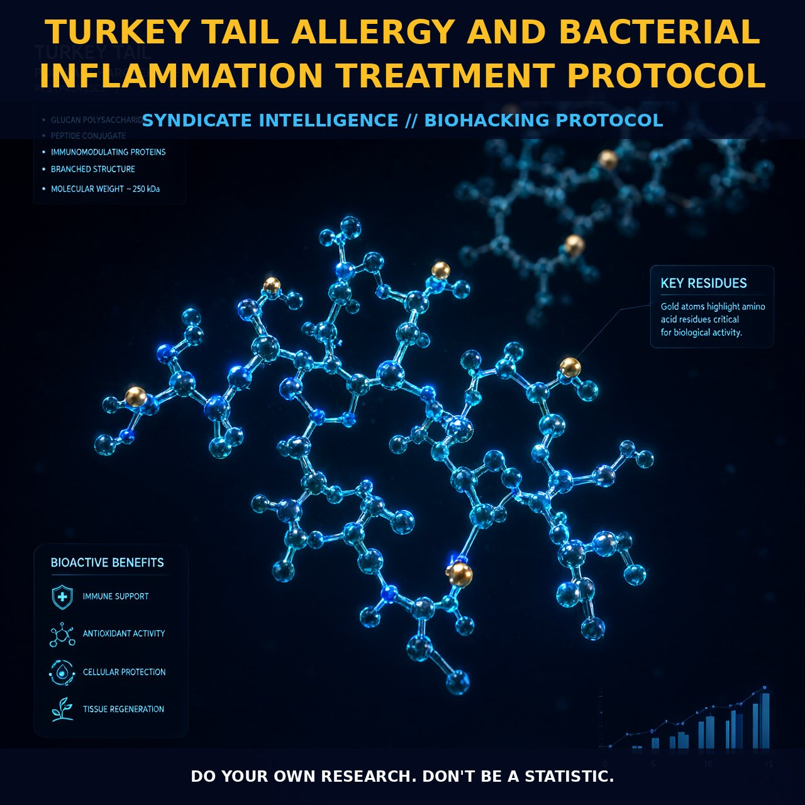

Trametes Versicolor: Polysaccharide-Driven Immunomodulation for

1. The Mechanics of Immunomodulation
Trametes versicolor, widely recognized as Turkey Tail, operates through a sophisticated modulation of antimicrobial and antiviral pathways, primarily driven by the release of interleukin-1. Its biological efficacy is anchored in a vast phytochemical profile distributed across both mycelium and fruiting bodies, where polysaccharides act as the critical bioactive agents. These compounds do not merely support the immune system; they actively regulate the body’s attachment mechanisms to foreign entities, distinguishing between persistent bacterial invaders and potential oncological threats.
By activating these specific immune responses, Turkey Tail extracts engineer a physiological environment that is inherently hostile to chronic inflammation and microbial overgrowth. The mechanism extends beyond simple pathogen clearance to include direct enzymatic activity within the mushroom tissue itself. This dual action—simultaneous enzyme release and targeted immune activation—provides a robust framework for managing bacterial load without disrupting systemic homeostasis, making it a potent instrument for biohackers targeting low-grade, persistent inflammation.
2. Biological Leverage and Gut-Immune Axis
The strategic leverage offered by Turkey Tail lies in its profound influence on gut biome health, which serves as the primary determinant for overall inflammation levels and immune resilience. Damage to beneficial gut flora, often exacerbated by antibiotic usage and environmental insecticides, predisposes individuals to autoimmune conditions wherein the immune system erroneously attacks healthy tissue. Turkey Tail extracts function to restore this microbial equilibrium, thereby reducing the inflammatory burden that contributes to the rising prevalence of autoimmunity in aging populations.
Furthermore, the mushroom’s capacity to support immune attachment suggests a critical role in cellular surveillance against abnormal growth, with emerging research indicating protective benefits for breast, lung, and colorectal tissues. However, this immunomodulatory nature requires careful calibration; it acts as a dynamic lever that can either dampen excessive inflammation or bolster a sluggish response, depending on the individual’s baseline state. For the self-optimizing practitioner, this versatility allows for precise management of inflammatory markers while supporting long-term tissue integrity.
3. Tactical Implementation Protocol
Effective implementation demands strict attention to dosage form, timing, and potential pharmacological interactions. While generally safe, high doses may precipitate allergic reactions, such as emesis or contact dermatitis, particularly in individuals hypersensitive to the Asteraceae family. Internal single doses in infusion form can reach up to 3 grams, delivering a concentrated source of active polysaccharides. For those preferring liquid preparations, a daily regimen of 1 to 4 milliliters of liquid extract or a cup of freshly brewed tea provides a steady supply of bioactive compounds.
Timing is paramount; it is advisable to administer the preparation 20 to 30 minutes before meals to maximize absorption and minimize gastric irritation. The tonic effects are cumulative, requiring several weeks of consistent treatment to fully manifest, aligning with the slower regulatory rhythms of the immune system rather than acute pharmacological spikes. Individuals should begin with lower doses to assess tolerance, particularly when introducing multiple botanicals, while monitoring for shifts in gut response or skin reactivity.
4. Prostar Life Hack
Titration Strategy: To minimize gastric irritation and optimize absorption, take your Turkey Tail preparation 20-30 minutes before meals on an empty stomach. Start with a lower dose to calibrate your immune response and gradually increase over several weeks, as the immunomodulatory benefits are cumulative rather than acute.
Prostar Life Hack
To minimize gastric irritation and optimize absorption, take your Turkey Tail preparation 20-30 minutes before meals on an empty stomach. Start with a lower dose to calibrate your immune response and gradually increase over several weeks, as the immunomodulatory benefits are cumulative rather than acute.
[ AUTHOR: LEAD TECHNICAL RESEARCHER ]